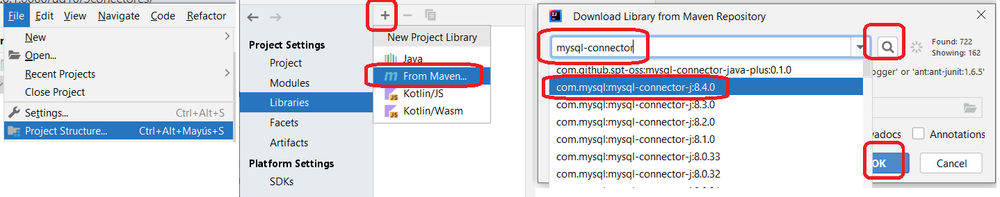
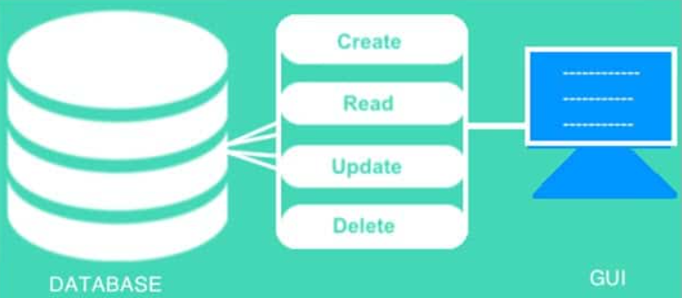
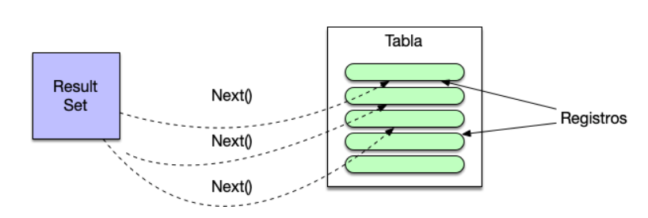
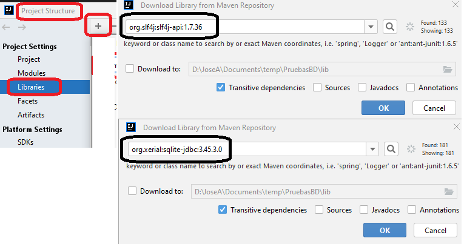
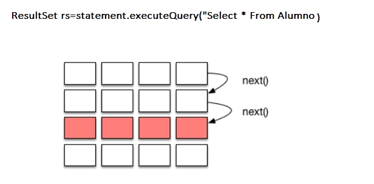

⚙️ Conectores o drivers¶
Un conector o driver es un mecanismo que permite a un lenguaje de programación conectarse, y trabajar, contra una base de datos. Se encarga de mantener el diálogo con la base de datos, para poder llevar a cabo el acceso y manipulación de los datos.
Algunos de los más conocidos son:
-
ODBC (Open Database Connectivity). Es un estándar viejo. Esta tecnología proporciona una interfaz común para tener acceso a bases de datos SQL heterogéneas. ODBC está basado en SQL (Structured Query Language) como un estándar para tener acceso a datos. ODBC permite la conexión fácil desde varios lenguajes de programación y se utiliza mucho en el entorno Windows.
-
JDBC (Java Data Base Connectivity).
En este curso, nos vamos a centrar en JDBC, puesto que, desde el punto de vista de Java, es una de las tecnologías más importantes de conectividad a la base de datos. Y, además, Java 8 ha eliminado el puente JDBC-ODBC, lo que significa que los controladores ODBC de Microsoft ya no funcionan.
JDBC¶
Casi de forma simultánea a ODBC, la empresa Sun Microsystems, en 1997 sacó a la luz JDBC, un API conector de bases de datos, implementado específicamente para usar con el lenguaje Java. Se trata de un API bastante similar a ODBC en cuanto a funcionalidad, pero adaptado a las especificidades de Java. Es decir, la funcionalidad se encuentra capsulada en clases (ya que Java es un lenguaje totalmente orientado a objetos) y, además, no depende de ninguna plataforma específica, de acuerdo con la característica multiplataforma defendida por Java.
Es una API que permite la ejecución de operaciones contra una base de datos desde Java independientemente del sistema operativo donde se ejecute o de la base de datos a la cual se acceda.

Es importante destacar también que JDBC no exige ninguna instalación, ni ningún cambio sustancial en el código a la hora de utilizar uno u otro controlador. Esta característica se sustenta, en primer lugar, en la utilidad de Java que permite cargar programáticamente cualquier clase a partir de su nombre; en segundo lugar, en la funcionalidad de la clase DriverManager (de la API JDBC), que sin necesidad de indicarle el driver específico que hay que utilizar es capaz de encontrarlo y seleccionarlo de entre todos los que el sistema tenga cargados en memoria.
A pesar de eso tampoco es mucho problema ya que actualmente podemos encontrar un driver JDBC para prácticamente cualquier SGBDR existente. El conector lo proporciona el fabricante de la base de datos o bien un tercero.
Conexión con la BBDD desde JDBC¶
Antes de empezar a desarrollar aplicaciones JDBC es necesario aseguramos que tenemos instalado el SGBD, y además que tenemos acceso desde el lugar donde estemos desarrollando la aplicación. Una vez verificado el sistema gestor de base de datos, será necesario obtener el controlador JDBC del sistema gestor. Generalmente, cada fabricante pondrá a disposición de sus usuarios los diferentes tipos de controladores que tenga para sus productos. Sea cual sea el tipo de controlador que finalmente necesita, éste tendrá como mínimo una biblioteca en formato .jar con todas las clases de la API JDBC. Habrá que añadir el archivo .jar como biblioteca de nuestra aplicación.
Para descargar el driver JDBC para MySQL podemos hacerlo desde el repositorio de Maven:
Podemos añadirlo fácilmente en IntelliJ a nuestro proyecto

Establecimiento y cierre de conexión¶
Las clases que afectan a la gestión de la conexión con la BBDD son:
-
DriverManager: esta clase se utiliza para registrar el controlador para un tipo de base de datos específico (por ejemplo, MySQL en este tutorial) y para establecer una conexión de base de datos con el servidor a través de su métodogetConnection(). -
Connection, es una interfaz que representa una conexión a la base de datos establecida (sesión) desde la cual podemos crear declaraciones para ejecutar consultas y recuperar resultados, obtener metadatos sobre la base de datos, cerrar conexión, etc.Los objetosConnectionmantendrán la capacidad de comunicarse con el sistema gestor mientras permanezcan abiertos. Esto es, desde que se crean hasta que se cierran utilizando el método close.
El objeto Connection está totalmente vinculado a una fuente de datos, por eso en pedir la conexión hay que especificar de qué fuente se trata siguiendo el protocolo JDBC e indicando la url de los datos, y en su caso el usuario y password.
Example 🤓
- jdbc:bbdd://server:port/schema
- jdbc:postgresql://localhost:5432/severo
La url seguirá el protocolo JDBC, comenzará siempre por la palabra jdbc seguida de dos puntos. El resto dependerá del tipo de controlador utilizado, del host donde se aloje el SGBD, del puerto que este use para escuchar las peticiones y del nombre de la base de datos o esquema con el que queremos trabajar.
import java.sql.Connection;
import java.sql.DriverManager;
import java.sql.SQLException;
...
public static void main(String[] args) {
String user = "patricia";
String password = "marti";
String url = "jdbc:mysql://localhost/severo_ad";
try (final Connection connection = DriverManager.getConnection(url, user, password)) {
System.out.println(connection.getCatalog());
} catch (SQLException ex) {
System.out.println("SQLException: " + ex.getMessage());
System.out.println("SQLState: " + ex.getSQLState());
System.out.println("VendorError: " + ex.getErrorCode());
}
}
CRUD(Crear, Leer, Actualizar, Eliminar)¶
CRUD es un acrónimo que se refiere a las operaciones básicas que se pueden realizar en una base de datos o sistema de gestión de bases de datos relacionales. Cada letra en CRUD representa una de estas operaciones

- Create (Crear): La operación de crear implica agregar nuevos registros o filas a una tabla en la base de datos.
- Read (Leer): La operación de leer implica recuperar información de la base de datos. Esto generalmente implica realizar consultas SELECT para recuperar datos de una o más tablas en la base de datos.
- Update (Actualizar): La operación de actualizar implica modificar los datos existentes en la base de datos. Esto se hace mediante la ejecución de consultas UPDATE que modifican los valores de uno o más registros en una tabla.
- Delete (Eliminar): La operación de eliminar implica eliminar registros o filas de una tabla en la base de datos. Esto se hace mediante la ejecución de consultas DELETE.
El CRUD en un programa define las operaciones básicas sobre la base de datos
El API JDBC distingue dos tipos de consultas:
- Consultas: SELECT
- Actualizaciones: INSERT, UPDATE, DELETE, sentencias DDL.
Interfaces y clases principales de JDBC¶
-
StatementyPreparedStatement: estas interfaces se utilizan para ejecutar consultas SQL estáticas y consultas SQL parametrizadas, respectivamente.Statementes la superinterfaz de la interfazPreparedStatement, que se utiliza para consultas parametrizadas. Sus métodos comúnmente utilizados son:boolean execute(String sql): ejecuta una sentencia SQL general. Devuelve verdadero si la consulta devuelve unResultSet, falso si la consulta devuelve un recuento de actualizaciones o no devuelve nada. Este método solo se puede utilizar con una sentencia.-
int executeUpdate(String sql): ejecuta una sentencia INSERT, UPDATE o DELETE y devuelve un conteo actualizado que indica el número de filas afectadas (por ejemplo, 1 fila insertada, 2 filas actualizadas o 0 filas afectadas).Statement stmt = con.createStatement(); String q1 = "INSERT INTO user VALUES (1,root,Patricia Marti)"; int x = stmt.executeUpdate(q1);
-
ResultSet executeQuery(String sql): ejecuta una sentencia SELECT y devuelve un objetoResultSetque contiene los resultados devueltos por la consulta.Statement stmt = con.createStatement(); String q1 = "SELECT * FROM USER WHERE id = '" + id + "' AND pwd = '" + pwd + "'"; ResultSet rs = stmt.executeQuery(q1); -
ResultSet: contiene los datos de la tabla devueltos por una consulta SELECT. Este objeto se usa para iterar sobre las filas en el conjunto de resultados usando el métodonext().

🤓 SQLException: Es la excepción que se lanza cuando hay algún problema entre la base de datos y el programa Java JDBC. Contiene los siguientes métodos:
.getMessage(), nos indica la descripción del mensaje de error..getSQLState(), devuelve un código SQL estándar definido por ISO/ANSI y el Open Group que identifica de forma unívoca el error que se ha producido. SQLState Official.getErrorCode(), es un código de error que lanza la base de datos. En este caso el código de error es diferente dependiendo del proveedor de base de datos que estemos utilizando..getCause(), nos devuelve una lista de objetos que han provocado el error..getNextException(), devuelve la cadena de excepciones que se ha producido. De tal manera que podemos navegar sobre ella para ver en detalle de esas excepciones.
public void insertPersona(Persona persona) throws SQLException {
try (PreparedStatement statement = connection.prepareStatement(INSERT_QUERY)) {
statement.setString(1, persona.getDni());
statement.setString(2, persona.getNombre());
statement.setString(3, persona.getApellido());
statement.setInt(4, persona.getEdad());
statement.executeUpdate();
} catch (SQLException e) {
// Código de error 1062 corresponde a clave duplicada en MySQL
if (e.getSQLState().equals("23000") || e.getErrorCode() == 1062) {
System.err.println("Error: Clave duplicada para el DNI " + persona.getDni());
} else {
throw e; // Relanza la excepción si es otro error
}
}
}
Liberación de recursos¶
Danger 😬
Se debe cerrar explícitamente Statement, ResultSet y Connection cuando ya no se necesiten, a menos que se declaren con un try-catch-with-resources.
Las instancias de Connection y las de Statement almacenan, en memoria, mucha información relacionada con las ejecuciones realizadas. Además, mientras permanecen activas mantienen en el SGBD un conjunto importante de recursos abiertos, destinados a servir de forma eficiente las peticiones de los clientes. El cierre de estos objetos permite liberar recursos tanto del cliente como del servidor.
Aunque se haya cerrado la conexión, los objetos Statements que no se habían cerrado expresamente permanecen más tiempo en memoria que los objetos cerrados previamente, ya que el garbage collector de Java deberá hacer más comprobaciones para asegurar que ya no dispone de dependencias ni internas ni externas y se puede eliminar.
Es por ello que se recomienda proceder siempre a cerrarlo manualmente utilizando el método close(). El cierre de los objetos Statement asegura la liberación inmediata de los recursos y la anulación de las dependencias.
Importante 😵💫
Si en un mismo método queremos cerrar un objeto Statement y Connection, lo haremos siguiendo estos pasos:
-
Cerramos el
Statement -
Cerramos la instancia
Connection.
Si lo hiciéramos al revés, cuando intentáramos cerrar el Statement nos saltaría una excepción de tipo SQLException, ya que el cierre de la conexión lo habría dejado inaccesible.
Cuando se cierra un objeto Statement, su objeto ResultSet actual, si existe, también se cierra. Pero eso no ocurre cuando se cierra la conexión.
try (Connection connection = dataSource.getConnection();
Statement statement = connection.createStatement()) {
try (ResultSet resultSet = statement.executeQuery("SELECT * FROM ....")) {
// Do actions.
}
}
Ejemplo CRUD en SQLite¶

SQLite es un motor de base de datos relacional de código abierto que se especializa en ser ligero, eficiente y fácil de usar. A diferencia de los sistemas de gestión de bases de datos tradicionales que funcionan como servidores independientes y manejan múltiples conexiones de cliente, SQLite es una biblioteca de base de datos sin servidor que se incorpora directamente en la aplicación que la utiliza.
Vamos a ver como crear un aplicación simple con las operaciones básicas CRUD sobre una tabla Alumnos
Agregar jdbc de SQLite al proyecto¶
Agregamos al proyecto las librerías que manejan SQLite.En el repositorio de Maven. Necesitamos las librerías.
-
sqlite-jdbc-x.x.x.jar
-
slf4j-api-x.x.x.jar
-
ch.qos.logback.classic

Conexión JDBC¶
SQLite no se conecta a ningún servidor, lo único que necesita el JDBC de SQLite es el nombre del fichero que contiene la base de datos.
static final String URL = "jdbc:sqlite:alumnos.db";
Crear una tabla si no existe en la Base de datos¶
Crearemos la tabla de Alumnos si no existe. Esto puede ocurrir la primera vez que se ejecuta el programa
private static void crearTabla(Connection conexion) throws SQLException {
try (Statement statement = conexion.createStatement()) {
statement.executeUpdate(
"CREATE TABLE IF NOT EXISTS Alumno (" +
"id INTEGER PRIMARY KEY AUTOINCREMENT," +
"nombre TEXT NOT NULL," +
"email TEXT," +
"telefono TEXT)"
);
System.out.println("Tabla Alumno creada correctamente.");
}
}
Insert: Insertar en la tabla¶
Podemos crear sentencias SQL parametrizada que nos permiten generalizarlas y reutilizarlas. En aquellos lugares donde incluiremos un parámetro, colocamos un ?
private static void insertarAlumno(Connection conexion, String nombre, String email, String telefono) throws SQLException {
//Indicamos los parámetros mediante ?
String sqlInsert = "INSERT INTO Alumno (nombre, email, telefono) VALUES (?, ?, ?)";
try (PreparedStatement statement = conexion.prepareStatement(sqlInsert)) {
//Indicamos los valores a insertar
statement.setString(1, nombre);
statement.setString(2, email);
statement.setString(3, telefono);
//Lanzamos la sentencia SQL
statement.executeUpdate();
System.out.println("Alumno '" + nombre + "' insertado correctamente.");
}
}
Update: Actualizar en la tabla¶
Al igual que el anterior, parametrizamos la sentencia SQL
private static void actualizarAlumno(Connection conexion, int id, String nombre, String email, String telefono) throws SQLException {
String query = "UPDATE Alumno SET nombre = ?, email = ?, telefono = ? WHERE id = ?";
try (PreparedStatement statement = conexion.prepareStatement(query)) {
//incluimos los parámetros
statement.setString(1, nombre);
statement.setString(2, email);
statement.setString(3, telefono);
statement.setInt(4, id);
//lanzamos la sentencia
int rowsAffected = statement.executeUpdate();
//podemos saber las tuplas afectadas
if (rowsAffected > 0) {
System.out.println("Registro de alumno actualizado correctamente.");
} else {
System.out.println("No se encontró ningún registro de alumno con el ID proporcionado.");
}
}
}
Delete: Borrar en la tabla¶
Seguimos creando sentencias SQL parametrizada
private static void borrarAlumno(Connection conexion, int id) throws SQLException {
String query = "DELETE FROM Alumno WHERE id = ?";
try (PreparedStatement statement = conexion.prepareStatement(query)) {
statement.setInt(1, id);
statement.executeUpdate();
System.out.println("Alumno con ID " + id + " eliminado correctamente.");
}
}
Select: Consultas SQL mediante ResultSet¶
Podemos crear las sentencias que deseemos y parametrizadas. Estas nos devuelven un objeto de tipo ResultSet.
El ResultSet nos permite recorrer las tuplas devueltas por el resultado de la sentencia SQL mediante el método next()

ResultSet nos permite extraer los campos de la tupla actual ya sea por nombre o por posición
//nombre de la columna
int id=resultSet.getInt("id")
String nombre = resultSet.getString("nombre");
//posición de la columna
String email = resultSet.getString(3);
La estructura suele tener el siguiente esquema
try (Connection conexion = getConnection();
Statement sentencia = conexion.createStatement();
ResultSet resultSet = sentencia.executeQuery(sql)) {
//mientras tengamos tublas
while (resultSet.next()) {
//gestionar resultset
}
} catch (SQLException e) {
}
Ejemplos de su uso sobre la tabla Alumno¶
Mostrar todos los alumnos
private static void consultarAlumnos(Connection conexion) throws SQLException {
try (Statement statement = conexion.createStatement();
ResultSet resultSet = statement.executeQuery("SELECT * FROM Alumno")) {
while (resultSet.next()) {
System.out.println("ID: " + resultSet.getInt("id") +
", Nombre: " + resultSet.getString("nombre") +
", Email: " + resultSet.getString("email") +
", Teléfono: " + resultSet.getString("telefono"));
}
}
}
private static void consultarAlumnosPorNombre(Connection conexion, String parteNombre) throws SQLException {
//sentencia parametrizada
String query = "SELECT * FROM Alumno WHERE nombre LIKE ?";
try (PreparedStatement statement = conexion.prepareStatement(query)) {
//añadimos el parámetro
statement.setString(1, "%" + parteNombre + "%");
try (ResultSet resultSet = statement.executeQuery()) {
while (resultSet.next()) {
System.out.println("ID: " + resultSet.getInt("id") +
", Nombre: " + resultSet.getString("nombre") +
", Email: " + resultSet.getString("email") +
", Teléfono: " + resultSet.getString("telefono"));
}
}
}
}
Devolver un ArrayList de Alumnos
Suponiendo que tenemos la clase Alumno
public class Alumno {
private int id;
private String nombre;
private String email;
private String telefono;
// Constructor
public Alumno(int id, String nombre, String email, String telefono) {
this.id = id;
this.nombre = nombre;
this.email = email;
this.telefono = telefono;
}
@Override
public String toString() {
return "id->" + id +
", nombre->'" + nombre + '\'' +
", email->'" + email + '\'' +
", telefono->'" + telefono ;
}
}
Una de las acciones más habituales es devolver una lista de Alumnos a partir de la consulta realizada
private static List<Alumno> listaAlumnos(Connection conexion) throws SQLException {
List<Alumno> listaAlumnos = new ArrayList<>();
try (Statement statement = conexion.createStatement();
ResultSet resultSet = statement.executeQuery("SELECT * FROM Alumno")) {
while (resultSet.next()) {
int id = resultSet.getInt("id");
String nombre = resultSet.getString("nombre");
String email = resultSet.getString("email");
String telefono = resultSet.getString("telefono");
// Creamos un objeto Alumno y lo agregamos a la lista
Alumno alumno = new Alumno(id, nombre, email, telefono);
listaAlumnos.add(alumno);
}
}
return listaAlumnos;
}
Un ejemplo de uso de los métodos anteriores
public static void main(String[] args) {
Connection conexion = null;
try {
conexion = DriverManager.getConnection(URL);
//creamos la tabla si no existe
crearTabla(conexion);
// Insertamos algunos alumnos
insertarAlumno(conexion, "Juan Pérez", "juan@example.com", "123456789");
insertarAlumno(conexion, "María López", "maria@example.com", "987654321");
insertarAlumno(conexion, "Carlos García", "carlos@example.com", "555555555");
insertarAlumno(conexion, "Laura Martínez", "laura@example.com", "777777777");
insertarAlumno(conexion, "Andrea Pérez", "andrea@example.com", "999999999");
//Buscamos los alumnos actuales
System.out.println("Alumnos:");
consultarAlumnos(conexion);
//Buscamos los alumnos con nombre que contiene 'Alumno'
System.out.println("Alumnos con nombre que contiene Pérez:");
consultarAlumnosPorNombre(conexion, "Pérez");
//Actualizamos el alumno con id 1
System.out.println("Actualizar 1");
int idAlumno = 1;
String nuevoNombre = "Juanito Pérez";
String nuevoEmail = "juan@example.com";
String nuevoTelefono = "555-1234";
// Llamamos al método para actualizar el alumno
actualizarAlumno(conexion, idAlumno, nuevoNombre, nuevoEmail, nuevoTelefono);
consultarAlumnosPorNombre(conexion,"Juan");
//Recuperamos los alumnos en una Lista
System.out.println("Lista de alumnos:");
List<Alumno> alumnos = listaAlumnos(conexion);
alumnos.forEach(System.out::println);
} catch (SQLException e) {
e.printStackTrace();
} finally {//Esta sentencia simpre se ejecuta. Hay que cerrar la conexión
try {
if (conexion != null) {
conexion.close();
}
} catch (SQLException e) {
e.printStackTrace();
}
}
}
Ataque por Inyección SQL¶
La inyección SQL es un tipo de ataque en el que un atacante inserta código SQL malicioso en las consultas SQL de una aplicación. Un ejemplo simplificado de cómo podría ocurrir una inyección SQL en Java:
Si tenemos un método para autenticar el usuario en el que construimos la sentencia SQL por concatenación
// Método para autenticar usuarios
public boolean autenticarUsuario(Connection conexion, String nombreUsuario, String contraseña) throws SQLException {
String consulta = "SELECT * FROM Usuarios WHERE nombre = '"
+ nombreUsuario
+"' AND contraseña = '"
+ contraseña + "'";
PreparedStatement statement = conexion.prepareStatement(consulta);
ResultSet resultado = statement.executeQuery();
return resultado.next();
}
Un atacante podría explotar esta vulnerabilidad ingresando un nombre de usuario malicioso, como " ' OR '1'='1" y una contraseña arbitraria. Esto alteraría la consulta SQL de la siguiente manera:
SELECT * FROM Usuarios WHERE nombre = '' OR '1'='1' AND contraseña = 'contraseña';
OR '1'='1' siempre evalúa como verdadero, por lo que la consulta devolvería todos los registros de la tabla Usuarios, permitiendo que el atacante acceda a la cuenta de cualquier usuario sin necesidad de una contraseña válida
Para prevenir la inyección SQL, se recomienda utilizar consultas parametrizadas o consultas preparadas, que permiten pasar los parámetros de forma segura sin concatenación directa en la cadena SQL. Por ejemplo:
public boolean autenticarUsuario(Connection conexion, String nombreUsuario, String contraseña) throws SQLException {
String consulta = "SELECT * FROM Usuarios WHERE nombre = ? AND contraseña = ?";
PreparedStatement statement = conexion.prepareStatement(consulta);
statement.setString(1, nombreUsuario);
statement.setString(2, contraseña);
ResultSet resultado = statement.executeQuery();
return resultado.next();
}